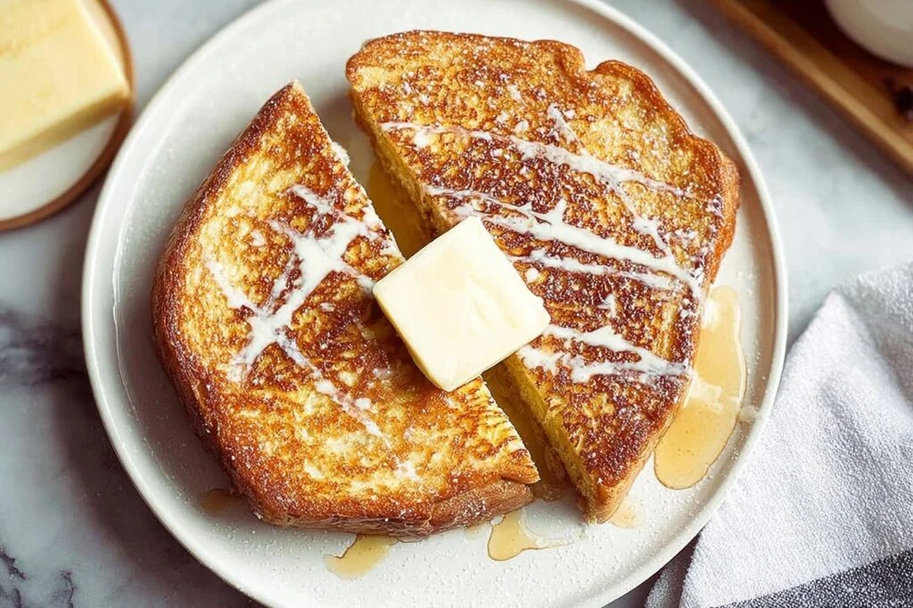

One serving of this Hong Kong French toast makes a hearty breakfast for one person or can be shared as an afternoon snack for two. It’s perfect for those moments when you want something special without too much fuss.